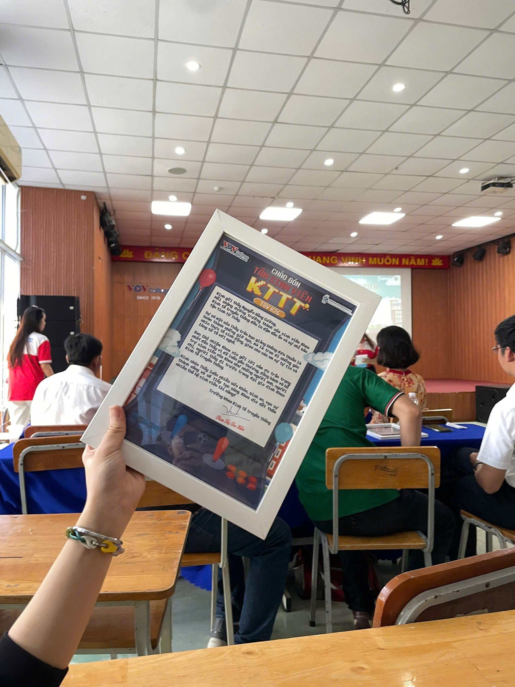
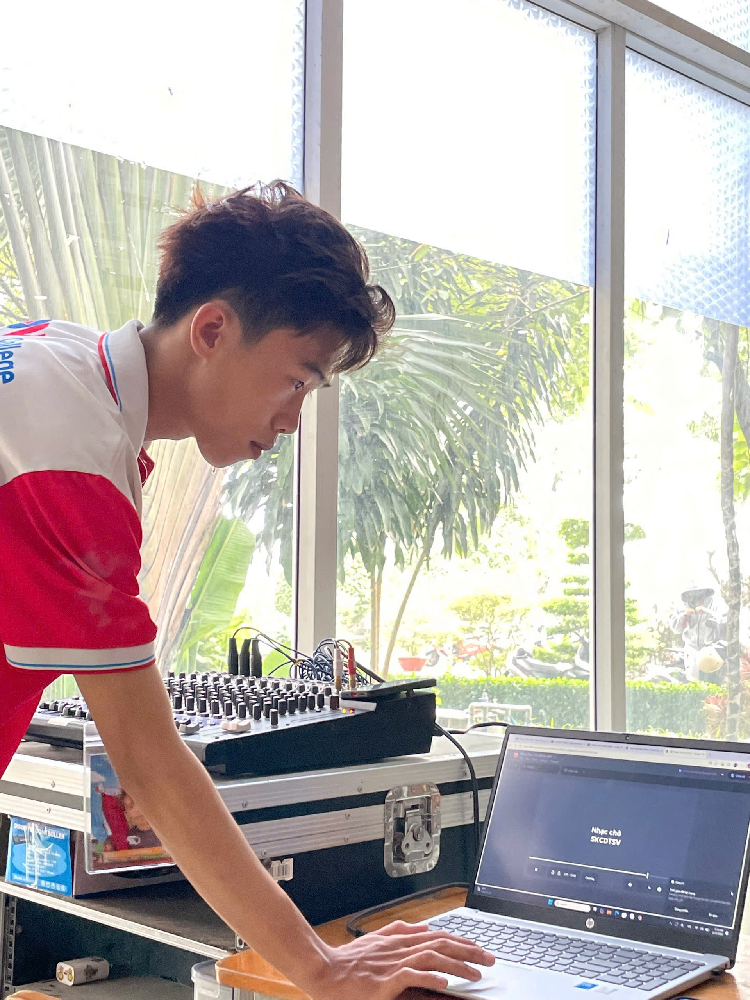
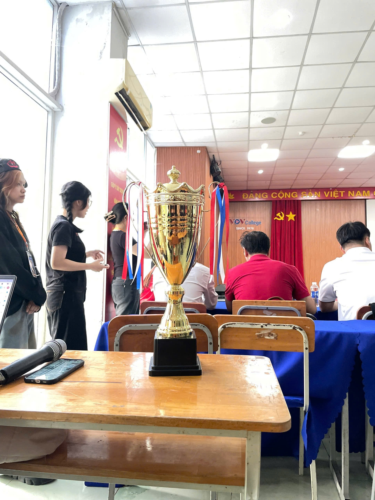
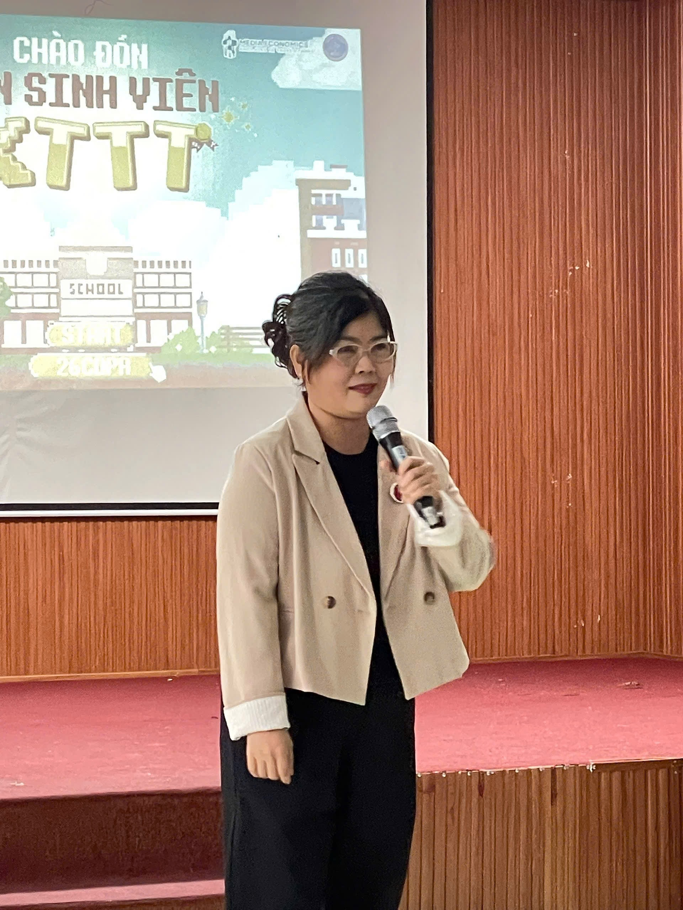
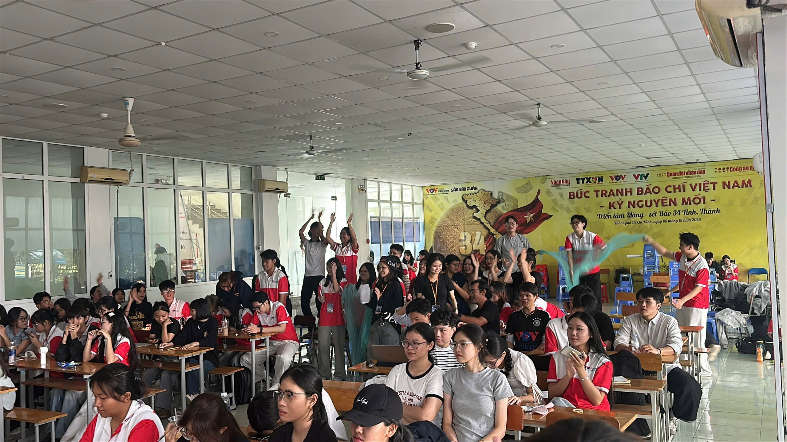
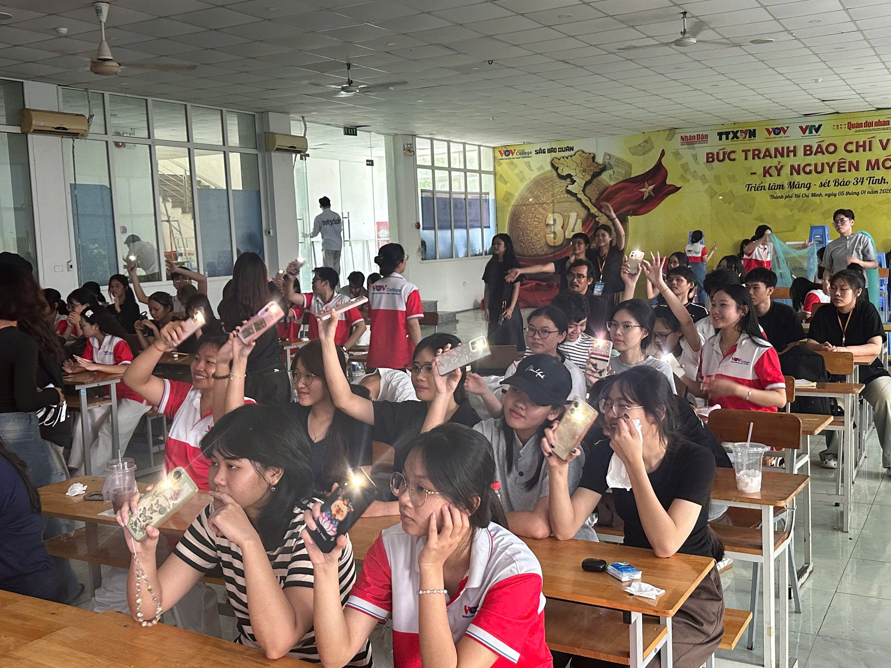
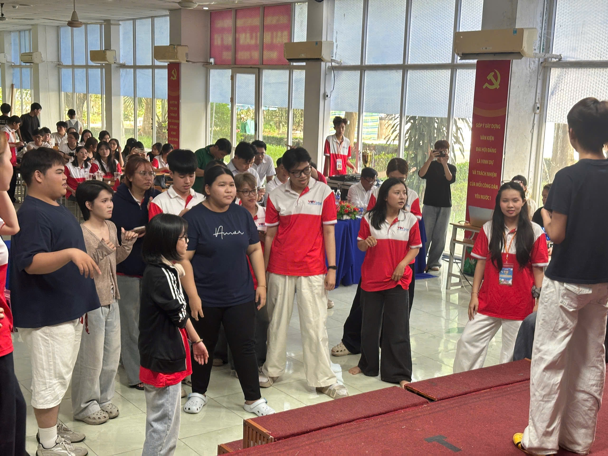
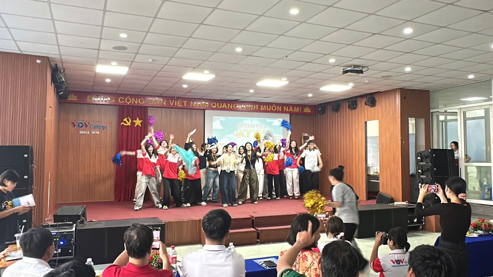
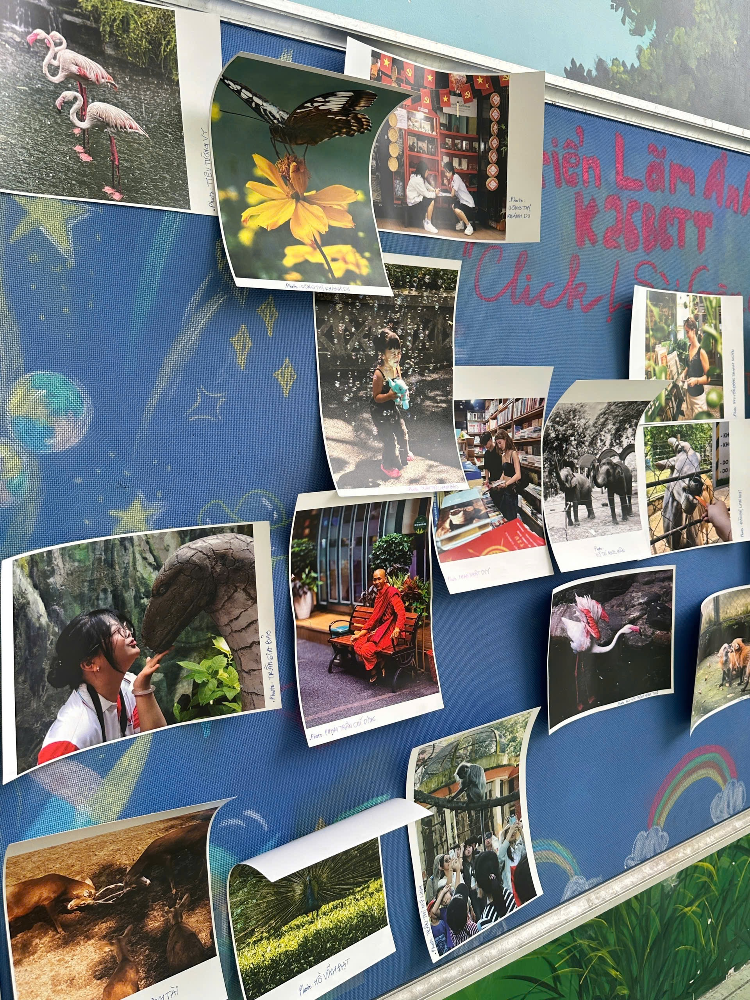

Tân sinh viên PR K26 và hành trình đầu tiên tại VOV College
Bước vào giảng đường đại học, cao đẳng không chỉ là sự thay đổi về môi trường học tập mà còn mở ra một hành trình mới với nhiều cơ hội trải nghiệm. Đối với tân sinh viên Quan hệ công chúng K26 tại VOV College, đây là dịp để gặp gỡ, kết nối và bắt đầu làm quen với lĩnh vực truyền thông.
01. Khởi đầu từ những điều đầu tiên
Mỗi hành trình đều bắt đầu từ những bước chân đầu tiên. Với tân sinh viên PR K26, môi trường học tập mới mang đến cơ hội làm quen với bạn bè, thầy cô và những kiến thức nền tảng của ngành Quan hệ công chúng.
Những trải nghiệm ban đầu cũng là dịp để mỗi sinh viên nhìn nhận rõ hơn về lựa chọn của mình, đồng thời hình dung về con đường học tập và nghề nghiệp phía trước.

02. Không khí chuẩn bị trước chương trình
Đằng sau một chương trình là nhiều công việc chuẩn bị khác nhau. Từ thiết bị âm thanh, không gian tổ chức đến các vật dụng phục vụ chương trình, mỗi chi tiết đều góp phần tạo nên diện mạo chung của sự kiện.
Những hình ảnh trước giờ diễn ra chương trình gợi mở một góc nhìn về công tác chuẩn bị và sự phối hợp trong môi trường tổ chức sự kiện.


03. Những khoảnh khắc tại hội trường
Hội trường là nơi các thành viên cùng gặp gỡ và theo dõi chương trình. Những khoảnh khắc trên sân khấu, sự chú ý của người tham dự và hoạt động ghi lại hình ảnh đã góp phần lưu giữ dấu ấn của ngày chào đón.



04. Sắc màu tân sinh viên
Một môi trường học tập mới sẽ trở nên gần gũi hơn khi mỗi người có cơ hội kết nối với những người bạn cùng khóa. Những hình ảnh giao lưu, tương tác và lưu niệm thể hiện tinh thần trẻ trung, cởi mở của thế hệ PR K26.



05. Lưu giữ những dấu ấn đầu tiên
Những bức ảnh tập thể và hình ảnh lưu niệm không chỉ ghi lại một thời điểm mà còn trở thành dấu mốc trong hành trình sinh viên. Đây cũng là những tư liệu để mỗi người nhìn lại chặng đường mình đã bắt đầu.



Hành trình mới chính thức bắt đầu.
Chào mừng các bạn tân sinh viên PR K26 đến với VOV College. Chúc mỗi thành viên sẽ có những trải nghiệm đáng nhớ, tích lũy kiến thức, phát triển kỹ năng và tìm thấy dấu ấn riêng trên hành trình khám phá thế giới Quan hệ công chúng.